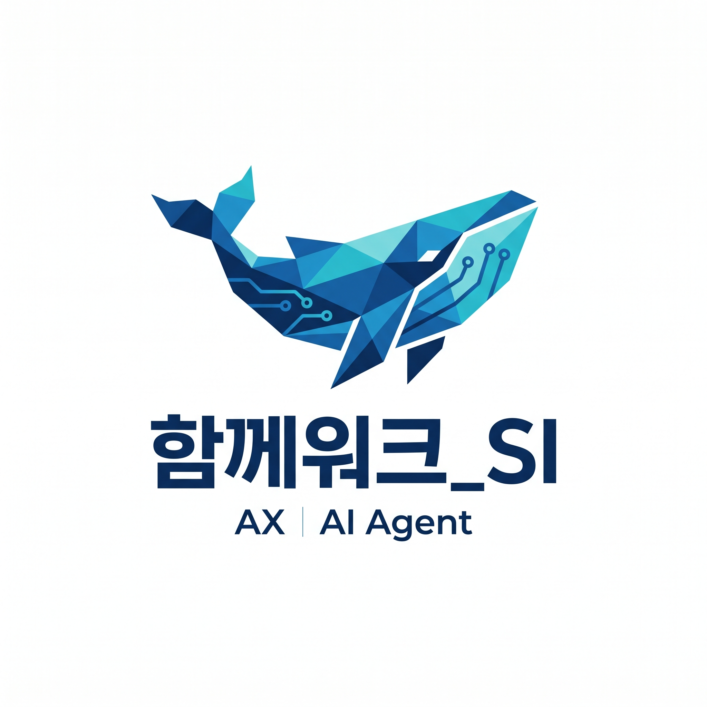

NPO AI 플랫폼 패키지 제안서
비영리단체 운영의 모든 것,
하나의 플랫폼으로
후원·회원·유족지원·신고·추모관·워크스페이스·AI까지
외부 협업툴도, 매달 나가는 구독료도 없이 완전 자급
함께워크_SI · AX AI Agent · 2026
목차
제안서 구성
3
AI 에이전트 (AX)
103개 도구 · 4계층 구조
문제 정의
NPO는 왜 지쳐가는가
좋은 뜻으로 시작했지만, 운영의 무게에 눌립니다.
도구는 넘치는데 연결되지 않습니다.
01 — 업무 분산
후원·회원·신고·지원이 각각 다른 툴
Excel, 카카오폼, 이메일, 구글 시트 … 데이터를 모아 정리하는 데만 하루가 사라집니다.
02 — 수작업 과다
매월 보고서 · 영수증 · 메일 발송에 수십 시간
담당자 1명이 반복 업무에 묶여 정작 수혜자 지원에 시간을 쓰지 못합니다.
03 — AI 부재
데이터는 쌓이지만 인사이트가 없음
후원 이탈 예측, 지원 우선순위, 신고 리스크 — 모두 사람이 일일이 판단해야 합니다.
SIREN 플랫폼
하나로 연결된
NPO 통합 운영 플랫폼
후원·신고·유족지원·추모관·워크스페이스·AI까지
외부 툴 구독을 없애고 단일 플랫폼 하나로 완결합니다.
💳통합 후원 관리
👥회원 & 등급 관리
🤝유족 지원 시스템
🚨SIREN 신고 플랫폼
📋워크스페이스 협업
🤖AI 에이전트 (AX)
🕯️추모관·유가족 이야기
🔒 보안 & 안정성
JWT 인증 · httpOnly 쿠키 · R2 암호화 저장 · 감사 로그 · 차단 미들웨어
전체 현황 대시보드
실시간 업데이트
후원금 · 회원 · 유족지원 · 신고 — 모든 지표를 한눈에
6개 핵심 기능 영역
SIREN CORE FEATURES
후원·회원·지원·신고·워크스페이스·AI — 완전 통합
워크스페이스 + AI 에이전트
AI 활성
"5월 신규 회원들한테 환영 메일 보내줘" → 승인 한 번으로 완료
SIREN 신고 플랫폼
AI 리스크 분석 자동
사건·괴롭힘·법률 3종 익명 신고 · AI 우선순위 · 담당자 배정
AI 일일 브리핑
매일 06:30 자동 생성
Gemini AI가 모든 데이터를 분석해 오늘의 우선순위 자동 정리
AI 칸반보드 · 리스크 점수
AI 리스크 분석 활성
각 업무 카드에 AI가 위험도 점수를 자동 산정 · 오늘의 집중 작업 안내
AI 지출 자동 분류
평균 정확도 90%
통장 거래내역 업로드 → AI가 예산 항목과 계정과목 자동 분류 → 회계 반영
AI AGENT — AX
채팅 한 마디로
업무가 실행된다
103개 도구 · 4계층 AI 구조 · 사전 승인 안전장치
자연어 명령이 실제 업무로 연결되는 SIREN AI
문제 인식
운영자의 하루,
40분이 낭비된다
후원자 명단 조회 → 필터링 → 메일 작성 → 발송 확인 → 기록 → 업무 카드 생성
이 반복 작업이 매일 쌓입니다.
기존 방식
조회 (5분) → 정리 (10분) → 초안 작성 (15분)
→ 승인 요청 (3분) → 발송 확인 (5분) → 로그 기록 (2분)
= 약 40분 소요
AX 에이전트 방식
운영자 입력 (오후 2:14)
"5월 신규 회원들한테 환영 메일 보내줘"
⚡ 실행 미리보기 (자동 생성)
대상: 5월 신규 127명 · 템플릿 #3 · 즉시 발송
비용 예상: 127건 API 호출
✅ 승인 후 완료 (오후 2:15)
127명 전원 발송 · 실패 0건 · 업무 카드 자동 완료
총 소요 시간:
2분
(95% 절감)
AI 에이전트 구조
Layer 1 & 2 — 실행 자동화
LAYER 1
배치 실행
여러 작업을 한 명령으로 순서대로 실행. "메일 보내고, 카드 완료하고, 공지 올려줘"
✓ 최대 10개 도구 순차 실행
✓ 각 단계 성공 확인 후 다음 진행
✓ 실패 시 자동 롤백 안내
LAYER 2
파이프라인
조회 → 필터 → 처리의 3단계 흐름을 AI가 자동으로 연결. 결과를 다음 도구의 입력으로
✓ 회원 조회 → 필터 → 발송 자동 연결
✓ 신고 분석 → 담당자 배정 → 알림
✓ 지출 업로드 → AI 분류 → 회계 반영
AI 에이전트 구조
Layer 3 & 4 — 지능 & 자율화
LAYER 3
힌트 시스템
AI가 현재 작업이 끝나면 "다음에 이런 것도 해보세요"를 자동으로 제안. 맥락 이해 기반
💡 AI 다음 단계 제안 예시
환영 메일 발송 완료 → "신규 회원 카드를 워크스페이스에 등록할까요?"
"이번 달 가입 추이 브리핑을 확인해보시겠어요?"
LAYER 4
예약 & 자율 실행
"매주 월요일 오전 9시에 후원 현황 요약해줘" — 한 번 예약하면 AI가 알아서 반복 실행
⏰ 일회성 / 반복 / cron 모두 지원
📋 예약 목록 조회 · 취소 · 수정 가능
🔔 실행 완료 시 알림 자동 발송
AX AI AGENT — IMPACT
숫자로 증명되는 AI의 힘
103
AI 도구
회원·후원·신고·지원·
워크스페이스·발송 전 영역
95%
업무 시간 절감
40분 → 2분
반복 업무 자동화
24/7
무중단 AI
매일 06:30 브리핑
예약 자동 실행
90%
분류 정확도
지출 AI 자동 분류
회계 직접 반영
사전 승인 안전장치 — AI가 실행 전
미리보기와 비용을 보여주고, 운영자 승인 후에만 실행
PORTFOLIO
검증된 기술력
대기업 · 공공기관 · 핀테크 · AI 서비스까지
다양한 산업에서 쌓아온 실전 개발 경험
신세계 SSG EDU
마켓컬리 (Kurly)
강릉시 데이터 시각화
HouseRentAms AI
NFLUX 워크플로우
OSS-Sec 보안
신세계 SSG EDU — 교육 LMS 플랫폼
대기업 LMS
코스 관리 · 수강생 등록 · 학습 통계 · 콘텐츠 운영 통합
마켓컬리 (Kurly) — 채권정산 시스템
핀테크 · 정산
8.42B 규모 · 대사 일치 99.87% · 1,284개 거래처 자동 정산
강릉시 — 공공 데이터 시각화 플랫폼
공공기관
실시간 인구 · CCTV · 공약 이행 · 교통 · 날씨 통합 데이터 대시보드
HouseRentAms — AI 스마트 가격 추천
AI 서비스
실거래 데이터 분석 → AI 최적 가격 자동 제안 · 수요 트렌드 감지
NFLUX — 엔터프라이즈 워크플로우 자동화
엔터프라이즈
드래그&드롭 프로세스 설계 · OCR · API 연동 · 이메일 자동화 · 분기 처리
ONBOARDING
함께, 첫 달부터 완전 운영
분석 → 구성 → 이전 → 교육 → 운영
빠르면 3주, 늦어도 6주 안에 완전 자립
도입 프로세스
3단계 온보딩
1
분석 & 설계
현행 업무 프로세스 분석
데이터 이전 계획 수립
맞춤 기능 구성 확정
1 ~ 2주
2
구성 & 이전
기존 데이터 마이그레이션
조직 맞춤 권한 설정
AI 에이전트 초기 학습
2 ~ 3주
3
교육 & 운영 전환
담당자 사용 교육
병행 운영 → 완전 전환
첫 달 집중 지원
1주 + 완전 자립
💡
기존 데이터 100% 이전 보장 — Excel·구글 시트·기타 시스템의 회원·후원·지원 이력 전체를 SIREN으로 안전하게 이전합니다
맞춤형 패키지
단체 규모에 맞춘 구성
STARTER
기본형
소규모 NPO / 초기 도입
✓ 후원·회원·신고 관리
✓ AI 일일 브리핑
✓ 워크스페이스 (칸반)
– AI 에이전트 (AX) 제외
– 고급 분석 제외
STANDARD ⭐
표준형
중소규모 / 가장 많이 선택
✓ 기본형 전체 포함
✓ AI 에이전트 (AX) 풀 기능
✓ AI 지출 자동 분류
✓ SIREN 신고 + AI 리스크
– 전용 서버 제외
ENTERPRISE
전문형
대형 협회 / 연합단체
✓ 표준형 전체 포함
✓ 다중 조직 관리
✓ 전용 서버 & 도메인
✓ SLA 24h 응답 보장
✓ 맞춤 기능 개발
비용 구조
투명한 요금 체계
초기 구축비 + 월 운영비 구조.
규모에 맞게 유연하게 조정 가능합니다.
포함 항목
클라우드 인프라 (Netlify Pro)
포함
Neon PostgreSQL DB
포함
Cloudflare R2 파일 저장
포함
Gemini AI API 호출
사용량별
이메일 발송 (Resend)
3,000건/월 무료
데이터 이전 · 맞춤 설정 · 교육 · 도메인 연결 포함
서버 · 기능 업데이트 · 버그 수정 · 모니터링 포함
💚 비영리단체 우대
교사유가족협의회 같은 공익 목적 단체에는 별도 협의로 지원 단가 적용 가능합니다.
지원 & 유지보수
도입 후에도
함께 운영합니다
단순 납품이 아닙니다. 플랫폼이 살아있는 한
함께워크_SI가 옆에 있습니다.
🔧
정기 기능 업데이트
매월 개선 사항 자동 배포. 별도 요청 없이 플랫폼이 계속 발전합니다.
🐛
버그 수정 보장
긴급 장애 시 24시간 내 대응. 운영에 지장 없도록 즉시 조치합니다.
📊
월간 운영 리포트
사용 현황 · 오류 로그 · AI 활용도 · 보안 점검 결과를 월 1회 제공합니다.
🎓
담당자 교육 지원
담당자 교체 시 무상 재교육. 매뉴얼과 영상 자료를 항시 제공합니다.
기대 효과
도입 6개월 후 달라지는 것들
95%
반복 업무 자동화
메일 발송·영수증·보고서
AI가 대신 처리
3배
수혜자 처리 속도
신고 접수→처리 평균 시간
5일 → 1.5일
100%
데이터 통합
분산된 Excel·구글시트
단일 플랫폼으로 통합
90%
회계 자동화
지출 AI 분류 정확도
수작업 거의 불필요
즉시
위험 감지
AI가 긴급 신고·이탈 위험
매일 06:30 자동 경보
24/7
무중단 운영
휴일·야간 관계없이
시스템이 알아서 처리
단순한 솔루션 공급사가 아닌
NPO 운영 파트너로서 함께합니다
우리를 선택하는 이유
🎯
NPO 특화 설계
일반 기업용 솔루션을 NPO에 끼워맞추지 않습니다. 후원·유족지원부터 온라인 추모관·유가족 이야기까지, 비영리단체만의 흐름을 처음부터 담았습니다.
🚀
실 운영 검증 완료
교사유가족협의회에서 실제 운영 중인 플랫폼입니다. 회원·매월 후원 처리·신고 대응에 더해 온라인 추모관까지 이 시스템으로 라이브 작동합니다.
🤖
AI가 기본 내장
AI는 선택 옵션이 아닙니다. 103개 도구·일일 브리핑·리스크 분석·지출 분류가 처음부터 통합되어 있습니다.
지금 바로 시작할 준비가
되어 있습니다
첫 미팅에서 현행 업무 분석부터 시작합니다.
무료 진단 후 맞춤 제안서를 드립니다.
NPO 특화 01
후원 통합 관리 — 정기·일시·CMS·계좌이체 4종 자동화.
결제부터 영수증·이탈 예측까지 — 후원 담당자가 수작업하던 모든 것이 자동입니다.
정기 후원
빌링 자동청구
매달 자동 카드 청구. 실패 시 재시도·안내 자동.
CMS 자동이체
효성 CMS+ 연동
은행 계좌 자동이체. 지로·CMS 완전 연동.
일시 후원
토스페이먼츠
카드·카카오·네이버페이. 즉시 영수증.
AI 이탈 예측
이탈 사전 감지
3개월 미후원 위험 회원 자동 감지·독려.
📄 자동 발급 서류
영수증 PDF
기부금 영수증
연말정산 서류
정기 명세서
NPO 특화 02
회원 관리 & 등급 시스템 — 모든 이력이 한 화면에.
후원 이력·상담 이력·등급·소통 채널이 회원 한 명의 화면에 통합됩니다.
회원 등급 자동 재계산
⭐정회원 (Gold)
5년 이상 · 누적 100만원+
매일 cron 자동 재계산 — 수동 갱신 불필요
통합 회원 화면
💰후원 이력 전체 · 납부 현황
💬상담·신고 이력 통합 조회
📧이메일·SMS 발송 이력
🔒개인정보 동의 이력 + 블랙리스트
📊이탈 위험 점수 (AI 산출)
📑연말정산 영수증 재발급 원클릭
실제 운영 중:
Excel 일괄 내보내기
조건별 회원 필터링 (등급·기간·금액)
대량 이메일 발송
회원 차단 + 사유 기록
NPO 특화 03
SIREN 신고 플랫폼 — 교사·직장 내 사건을 안전하게 접수.
사건 신고 · 괴롭힘 신고 · 법률 상담 3종 신고. 익명 제출 지원. 접수 → 배정 → 처리 → 완료 자동 알림.
사건 신고
교사 사망·피해 사건
형사·민사 사건 접수. 익명 지원. 담당 배정 자동 알림. 진행 현황 실시간 추적.
괴롭힘 신고
직장 내 괴롭힘
학교·직장 괴롭힘 접수. 증거 파일 첨부. 법적 조치 연계. 상담 신청 자동 연결.
법률 상담
무료 법률 상담
전문 변호사 상담 예약. 상담 이력 관리. 소요 시간 추적. 후속 조치 알림.
🔒익명 제출 지원
신고자 보호 최우선. IP 비저장 옵션.
📩자동 접수·알림
접수 즉시 담당자에게 이메일 알림.
📊관리자 대시보드
신고 유형·처리 현황·소요 시간 통계.
🔔진행 현황 추적
접수 → 배정 → 처리 → 완료 자동.
NPO 특화 04
유가족 지원 서비스 — 심리·법률·장학 전과정 통합 관리.
신청부터 배정·처리·완료까지 — 지원 서비스의 모든 과정이 플랫폼 안에서 추적됩니다.
심리 상담
전문 상담 연계
상담 신청 → 전문 상담사 배정 → 일정 조율 → 상담 이력 관리. 회기별 기록 보존.
월 평균 처리: 34건
법률 지원
법률 서비스 추적
법률 자문 신청 → 변호사 배정 → 진행 현황 추적 → 결과 기록. 서류 첨부 지원.
월 평균 처리: 18건
장학금
장학 지원 관리
장학금 신청 → 심사 → 지급 → 이력 관리. 수혜자 현황 대시보드. 재신청 알림.
수혜자 누적: 127명
통합 대시보드:
지원 유형별 현황
담당자별 처리 건수
평균 처리 기간
이사회용 리포트 자동 생성
NPO 특화 05
투명성 & 자동 보고서 — 후원자가 신뢰하는 조직을 만듭니다.
후원금 사용 내역, AI 일일 브리핑, 연간 활동 보고서가 자동 생성됩니다. 이사회·후원자·감사 모두 만족시킵니다.
🤖 AI 일일 브리핑
매일 06:30 자동 생성
어드민별 맞춤 브리핑. 어제 후원 현황·신규 회원·처리 대기 업무·이탈 위험 회원 요약.
Google Gemini AI 자동 작성
📊 후원금 사용 리포트
분기·연간 자동 생성
후원금 수입·지출 내역 자동 집계. PDF 리포트 생성. 후원자에게 이메일 자동 발송.
print CSS + PDF 변환
🔐 감사 로그
1년 전체 이력 보관
누가 무엇을 언제 변경했는지 전체 추적. 이사회·외부 감사 대비. 연간 자동 정리.
cron 자동 1년 이상 정리
결과적으로, 후원자는 내 후원금이 어디 쓰였는지 알고, 이사회는 보고서를 기다리지 않아도 됩니다.